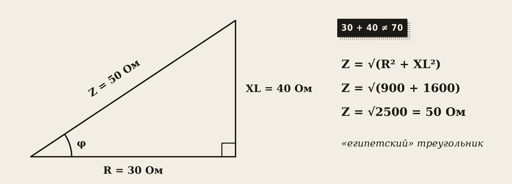
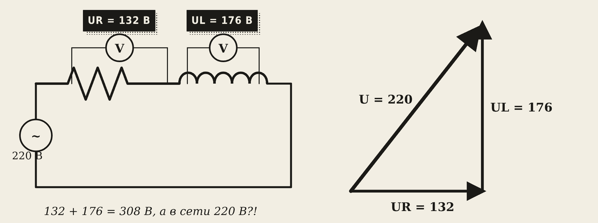
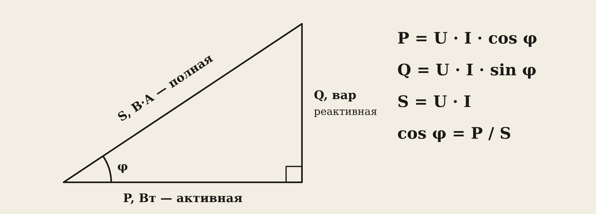
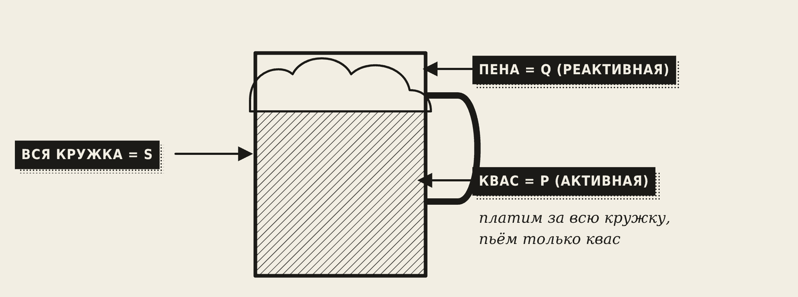
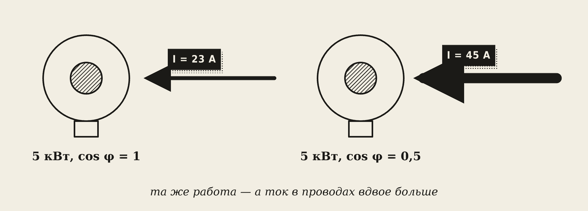
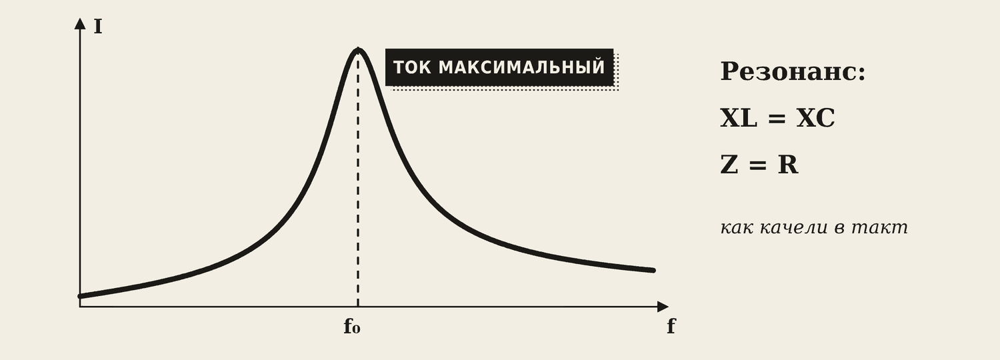
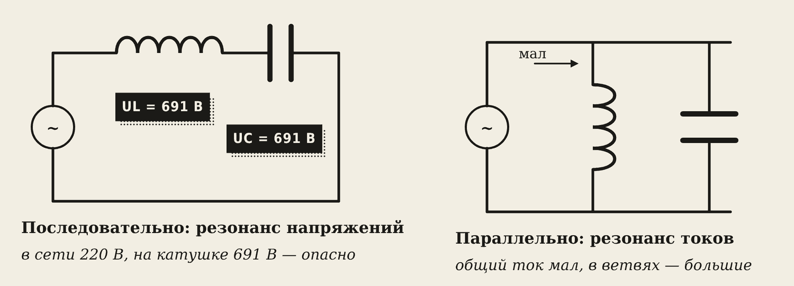

1. Резистор и катушка в одной цепи
На прошлой паре мы узнали: у резистора ток и напряжение «в ногу», у катушки ток отстаёт на 90°. А что будет, если включить их последовательно? Так устроен почти любой реальный потребитель: двигатель, сварочный трансформатор, дроссель — у их обмоток есть и сопротивление провода R, и индуктивность L.
Ток в последовательной цепи один и тот же. Но напряжение на резисторе совпадает с током по фазе, а на катушке — опережает его на 90°. Их вершины приходят в разное время, поэтому просто сложить их нельзя.
2. Треугольник сопротивлений

Сопротивления R и XL складываются «под прямым углом» — как катеты прямоугольного треугольника. Гипотенуза — полное сопротивление Z:
Z = √(R² + XL²)
Пример. R = 30 Ом, XL = 40 Ом. Z = √(900 + 1600) = √2500 = 50 Ом — не 70! Это «египетский треугольник» 3–4–5.
Если в цепи есть ещё и конденсатор, его XC вычитается из XL:
Z = √(R² + (XL − XC)²)
Дальше всё как обычно — закон Ома: I = U / Z.
3. Векторная диаграмма: почему 132 + 176 ≠ 220

Поставьте вольтметры на резистор и на катушку. Один покажет 132 В, другой — 176 В. В сумме 308 В, а в сети всего 220 В! Ошибки нет: напряжения сдвинуты на 90° и складываются как катеты:
U = √(UR² + UL²) = √(132² + 176²) = 220 В
Векторная диаграмма — это рисунок, где каждое напряжение — стрелка. UR рисуют вдоль тока, UL — вверх под 90°, U — их сумма (гипотенуза). Угол между U и током — сдвиг фаз φ.
4. Три мощности

В цепи с катушкой энергия ведёт себя двояко. Часть превращается в тепло и работу — это полезная мощность. А часть «гуляет» туда-обратно: катушка набирает энергию в магнитное поле и тут же отдаёт её обратно в сеть.
- Активная мощность P = U · I · cos φ, в ваттах [Вт] — полезная: тепло, вращение вала.
- Реактивная мощность Q = U · I · sin φ, в вольт-амперах реактивных [вар] — «гуляет» между сетью и катушками, работы не совершает, но греет провода.
- Полная мощность S = U · I, в вольт-амперах [В·А] — то, на что рассчитаны провода и трансформаторы.
S² = P² + Q²

Запомните
Кружка кваса. Вся кружка — полная мощность S. Квас — активная P, её вы пьёте. Пена — реактивная Q: место в кружке занимает, а напиться ею нельзя. Платите за всю кружку.
Поэтому мощность сварочных аппаратов и трансформаторов пишут в кВ·А: важно, какой ток пойдёт по проводам, а не только сколько энергии станет полезной работой.
5. Коэффициент мощности cos φ
cos φ = P / S = R / Z
cos φ показывает, какая доля полной мощности полезная. У чайника cos φ = 1 (только резистор). У двигателя — 0,8–0,9. У сварочного трансформатора на холостом ходу — очень низкий.

Пример. Двигатель 5 кВт при 220 В. При cos φ = 1: I = 5000 / 220 ≈ 23 А. При cos φ = 0,5: I = 5000 / (220 · 0,5) ≈ 45 А — вдвое больше! Та же работа, а провода греются в 4 раза сильнее.
Как повышают cos φ:
- ставят конденсаторные установки — конденсаторы компенсируют реактивную мощность катушек;
- не держат двигатели и сварочные трансформаторы на холостом ходу: без нагрузки у них очень низкий cos φ.
6. Резонанс

Катушка и конденсатор действуют противоположно: у одной ток отстаёт, у другого опережает. Если их сопротивления равны, они гасят друг друга. Это резонанс:
XL = XC
Аналогия — качели: если толкать их точно в такт, они раскачиваются очень сильно даже от слабых толчков.
Посмотрите, как меняется ток, когда частота проходит через резонанс:

Резонанс напряжений — L и C включены последовательно. Сопротивление минимально (Z = R), ток максимален. Напряжения на катушке и конденсаторе могут быть во много раз больше сетевого: в сети 220 В — 691 В на катушке!
Резонанс токов — L и C включены параллельно. Общий ток из сети минимален, а внутри, между катушкой и конденсатором, «качаются» большие токи.
Осторожно
При резонансе напряжений изоляция катушек и конденсаторов может не выдержать — пробой. Конденсаторы ставят только с запасом по напряжению.
Где резонанс полезен:
- настройка радиоприёмника на станцию — вращая ручку, мы меняем C, пока не наступит резонанс на частоте станции;
- компенсация реактивной мощности на заводах — по сути это резонанс токов: конденсаторы «качают» реактивный ток с двигателями, а из сети берётся только активный.
Словарик
- Полное сопротивление Z — общее сопротивление цепи переменного тока, Z = √(R² + XL²).
- Треугольник сопротивлений — катеты R и XL, гипотенуза Z.
- Векторная диаграмма — рисунок, где напряжения и токи — стрелки с углами между ними.
- Активная мощность P — полезная, в ваттах.
- Реактивная мощность Q — «гуляет» между сетью и катушками, в варах.
- Полная мощность S — U · I, в вольт-амперах.
- cos φ — коэффициент мощности: доля полезной мощности.
- Резонанс — состояние, когда XL = XC.
- Резонанс напряжений — при последовательном соединении L и C.
- Резонанс токов — при параллельном соединении L и C.
Эталоны в тетрадь
Перепишите в тетрадь по билетам — каждый эталон на отдельную страницу, с рисунком и строкой «Мой пример».
Цепь с R и L, треугольник сопротивлений
Неразветвлённая цепь с R и L (RLC): полное сопротивление, треугольник сопротивлений, векторная диаграмма.
- Резистор и катушка включены последовательно. Их сопротивления нельзя просто сложить — они складываются «под прямым углом».
- Полное сопротивление: Z = √(R² + XL²). Если есть и конденсатор: Z = √(R² + (XL – XC)²).
- Треугольник сопротивлений: катеты R и XL, гипотенуза Z. Пример: R = 30 Ом, XL = 40 Ом → Z = 50 Ом (египетский треугольник 3–4–5). (Нарисуйте.)
- Закон Ома: I = U / Z. Коэффициент мощности: cos φ = R / Z.
- Векторная диаграмма: UR — вдоль тока, UL — вверх под 90°, U — их сумма (гипотенуза). Поэтому вольтметры покажут UR + UL больше, чем U.
Активная, реактивная и полная мощность
Активная, реактивная и полная мощность. Коэффициент мощности cos φ и способы его повышения.
- Активная P = U·I·cos φ, [Вт] — полезная мощность (тепло, работа двигателя).
- Реактивная Q = U·I·sin φ, [вар] — «гуляет» между сетью и катушками, работы не совершает, но греет провода.
- Полная S = U·I, [В·А]; S² = P² + Q². В кВ·А указывают мощность трансформаторов и сварочных аппаратов.
- Аналогия: кружка кваса с пеной. Квас — активная мощность, пена — реактивная, вся кружка — полная.
- cos φ = P / S — какая доля мощности полезная. Низкий cos φ = лишний ток. Повышают: конденсаторные установки, не держать двигатели и сварочные трансформаторы на холостом ходу.
Резонанс
Резонанс напряжений и резонанс токов: условия, проявления, применение и опасность.
- Резонанс наступает, когда XL = XC: катушка и конденсатор «гасят» друг друга. Аналогия: качели, которые раскачивают точно в такт.
- Резонанс напряжений — L и C включены последовательно. Сопротивление минимально (Z = R), ток максимален. Напряжения на L и C могут быть намного больше сетевого — опасно для изоляции.
- Резонанс токов — L и C включены параллельно. Общий ток минимален, а токи в ветвях большие.
- Применение: настройка радиоприёмника на станцию, компенсация реактивной мощности на предприятиях (резонанс токов).
Проверь себя
Сначала ответьте сами — в тетради или вслух. Потом нажмите на вопрос, чтобы увидеть ответ.
1R = 6 Ом, XL = 8 Ом. Найдите Z.
Z = √(36 + 64) = √100 = 10 Ом.
2Вольтметр на резисторе показывает 132 В, на катушке — 176 В. Каково напряжение сети?
√(132² + 176²) = 220 В. Напряжения складываются под прямым углом.
3Чем отличается активная мощность от реактивной?
Активная превращается в тепло и работу. Реактивная «гуляет» между сетью и катушками и работы не совершает, но греет провода.
4S = 10 кВ·А, P = 8 кВт. Найдите cos φ и Q.
cos φ = 8 / 10 = 0,8; Q = √(100 − 64) = 6 квар.
5Почему низкий cos φ — плохо?
Для той же полезной мощности нужен больший ток — провода и трансформаторы перегружаются и греются.
6Как повысить cos φ на предприятии?
Поставить конденсаторные установки и не держать двигатели и сварочные трансформаторы на холостом ходу.
7Когда наступает резонанс?
Когда индуктивное сопротивление равно ёмкостному: XL = XC.
8Чем опасен резонанс напряжений?
Напряжения на катушке и конденсаторе могут быть во много раз больше сетевого — пробой изоляции.
Попробуйте в лаборатории
Откройте на телефоне или компьютере — ничего устанавливать не нужно.
Ответы к «Проверь себя»
- Z = √(36 + 64) = √100 = 10 Ом.
- √(132² + 176²) = 220 В. Напряжения складываются под прямым углом.
- Активная превращается в тепло и работу. Реактивная «гуляет» между сетью и катушками и работы не совершает, но греет провода.
- cos φ = 8 / 10 = 0,8; Q = √(100 − 64) = 6 квар.
- Для той же полезной мощности нужен больший ток — провода и трансформаторы перегружаются и греются.
- Поставить конденсаторные установки и не держать двигатели и сварочные трансформаторы на холостом ходу.
- Когда индуктивное сопротивление равно ёмкостному: XL = XC.
- Напряжения на катушке и конденсаторе могут быть во много раз больше сетевого — пробой изоляции.